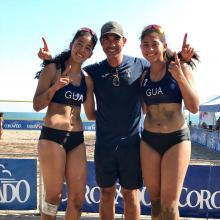

Entre todos los torneos importantes de ADVG, del año 2,021 al 2,022.
- Torneos de verano
- Torneo Edgar Callejas
- Torneos No Oficiales (Como entrenamientos en fase clasificatoria o juegos amistosos entre equipos)
- Torneos Navideños (Desde el mes de noviembre a mediados de enero)
- Tornenos de incremento anuales
- Torneo Juvenil Centroamericano
Existen 6 divisiones de liga del ADVG, para ambas ramas: Femenina y masculina
- Liga mayor
- Liga ascenso
- Liga primera:
- Liga segunda
- Liga tercera
- Liga cuarta
Torneos de AFECAVOL
- Palmares
- Centroamericano mayor: